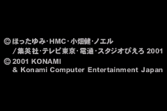

Hikaru no Go (Japan)
SRAM 256K
Cartridge Identity
- Game Code
AHKJ(FamilyAHK)- Header Title
HIKARUNOGO- Maker / Revision
A4/ rev0- ROM Size
- 8.0 MiB (8,388,608 B)
- Save Media
SRAM 256K- SHA-256
c33ac8640a066ac8c658160e13d763efea6981b338bb83d3263df50c8a0213ca- Engine / SDK Group
comm-007(56 families)
Screenshots


Observed Battery Save Layout
- Fill Byte & Active Size
0x00fill · 19–19 / 32,768 B active (entropy 3.43 bits/B)- Active Offset Ranges
0x0–0x7,0x10,0x12–0x1B(3 total)- ASCII Magic / Headers
ABBACKUP- Observed Variable Regions
- 0 bytes across 0 spans: None
- Candidate Checksum/Counter Spans
- None
ROM Assets, Compression & Audio
- BIOS Compression
- LZ77 (
0x10): 0 streams · RLE (0x30): 0 streams - ROM Pointer Tables
- 94 tables (0 pointing to validated compressed streams)
- SDK Backup Tags
SRAM_F_V102
Hardware MMIO Subsystems
ppu_display0x80006d4,0x8000df8,0x80028cc,0x8005084,0x80266e0,0x8027b24save_bus_sram_flash0x8000264,0x8000304,0x80004f8,0x8000578
Regional Variants & Revisions (Family AHK)
- Hikaru no Go (Japan) (Rev 1) (
AHKJ, 8 MiB)